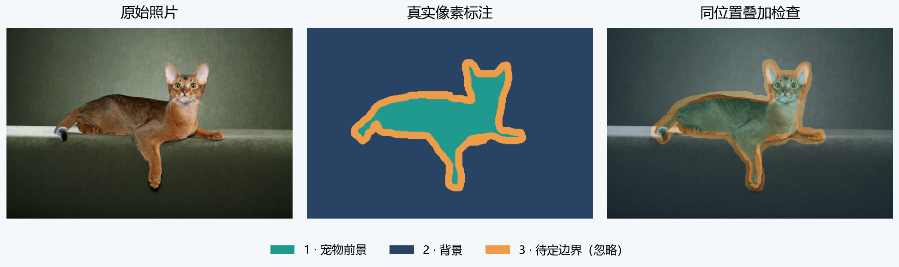
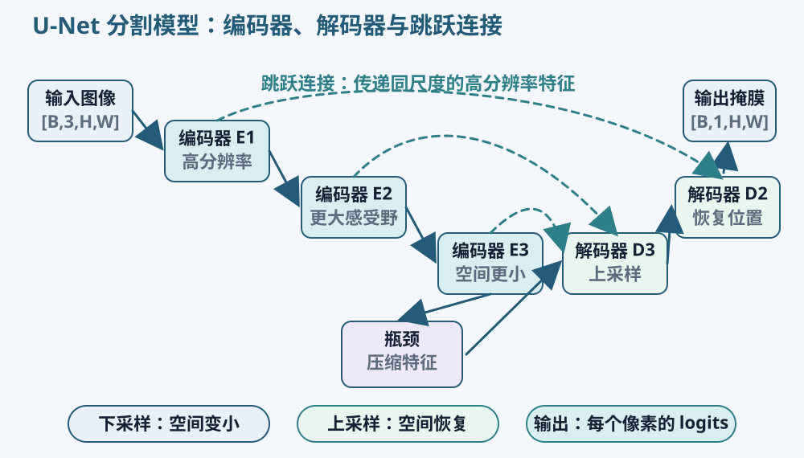
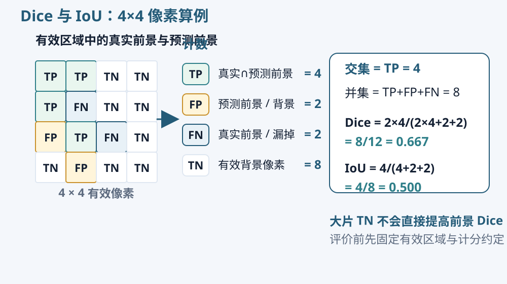

标注与像素预测
空间标注与任务类型
同一张照片可以具有多种标注。整图类别说明主要对象是什么，矩形框给出大致位置，像素标签进一步指出边界和区域。像素标注通常更细致，也需要更多人工工作。图像分割模型学习的是现有标注所定义的区域，理解标注规则应当早于选择网络。
语义分割给每个位置赋予类别，例如背景、猫、狗。同一类的不同个体可以使用同一类别值。如果照片里有两只狗，语义分割可以把它们都标成狗；实例分割还要区分哪一块属于第一只、哪一块属于第二只。实例编号表达对象身份，与猫狗类别编号含义不同。
本项目采用二分类语义分割：所有宠物前景归为一类，其他有效区域归为背景。多类语义分割则可以区分更多互斥类别，模型和损失需要相应改变。先写出类别表，就能知道一张标签图中的每个数字应怎样解释。
掩膜与边界待定区

分割掩膜可以看作与原图同样排列的二维数组。坐标相同的两个位置分别保存颜色和类别。掩膜里的值是编码，不能当作普通灰度亮度理解。显示时可以把前景涂成黄色、背景涂成紫色，但显示颜色不等于实际存储的类别编号。
Oxford-IIIT Pet 的原始 trimap 中，1 表示宠物前景，2 表示背景，3 表示边界待定区。课程把有效前景对应为 1、背景对应为 0，并把原值 3 排除在损失和评价之外。毛发边缘、混合像素等位置可能难以给出确定标注，忽略区保留了这种标注约定。
读取后先检查有哪些原始值，再核对宠物轮廓。不要直接把大于零的像素全部当成前景，因为原始背景编码也是正数。若在自己的文件中采用 255 表示忽略，需保存这份映射；模型的概率目标仍应是有效位置的 0 或 1，不能把 255 当作前景概率送进二元交叉熵。
同步变换与位置对应
照片和掩膜需要共同表达同一位置。缩放时可以对 RGB 照片使用双线性插值，标签图使用最近邻，以免插出不存在的类别值。随机裁剪、翻转和旋转则要共享相同空间参数，否则两张图虽然尺寸相同，动物位置却可能相反。
例如，将照片水平翻转却不翻转掩膜，左侧的猫头会移动到右侧，训练目标仍留在原位。模型会收到互相矛盾的监督。最直接的检查是把处理后的掩膜半透明叠加在照片上，观察耳朵、背部和尾巴是否仍然对应。
调整亮度等外观变换可以只作用于照片，目标位置仍由掩膜提供。裁剪如果移除了动物，可能形成没有前景的样本；补边又会增加人工区域。应说明这些位置如何标注和参与损失，不能让默认填充值悄悄改变任务含义。
像素分数与阈值
二分类分割可以让模型输出 [B,1,H,W]，每个位置保留一个前景 logit。经过 Sigmoid 后得到 0—1 数值，再按照阈值形成二值掩膜。例如 logit 为 0 时对应 0.5，约为 2 时对应 0.881，约为 −2 时对应 0.119。
设定“概率不低于 0.5 判为前景”以后，就能统计预测区域。把阈值提高到 0.7，预测前景通常会缩小，可能减少误分，也可能漏掉较弱的真实前景。阈值是一项评价设置，需要在验证集上确定，测试阶段保持固定。
另一种二分类实现可以输出两个类别 logits，并使用交叉熵；多类互斥分割通常输出 [B,C,H,W]，每个位置有 C 个类别分数，目标为 [B,H,W] 的整数类别。选择哪种表示都需要同时匹配输出、目标、损失和预测规则，不能只替换最后一层通道数。
输出分辨率也会影响边界。模型在 32×32 网格上给出分数，再放大成 128×128，只是增加显示与评价的位置，并不自动获得原来未预测的细节。可以先将连续分数恢复到标签尺寸，再根据固定规则得到二值预测；若先变成二值掩膜再放大，边缘可能呈现不同形态。
保存对照图时记录这些处理。细尾巴或毛发在缩小输入时可能已经消失，这类问题需要结合原图和处理后图像分析。保持输入尺寸、输出恢复方式和评价分辨率一致，才能更清楚地观察结构或训练设置带来的差异。
分割网络
编码器与解码器
判断一个像素属于宠物，往往需要它周围的上下文。同样的浅色局部可能属于动物毛发，也可能属于沙发，较大范围的信息有助于区分。编码器逐步降低空间尺寸、组合局部特征，让后续计算观察更广的输入范围。
一个简化示例可以让空间尺寸依次为 128×128、64×64、32×32，同时把特征通道设置为 16、32、64。空间位置减少，通道提供不同的学习特征。通道增加并不意味着自动获得新的真实测量，它只是改变模型内部表示容量。
分割需要恢复到与标签对应的空间网格，因此还要有解码器。它逐步提高空间尺寸，并结合卷积计算新的特征。上采样可以使用插值再卷积，也可以采用转置卷积等可学习方法。提高尺寸只提供更多输出位置，已经在下采样中丢失的细节仍需要其他信息支持。

U-Net 与跳跃连接
U-Net 将编码路径中较高分辨率的特征传给解码路径的相应尺度。这样的跳跃连接让较细的位置线索与较大范围的上下文共同参与计算，适合需要定位边界的任务。它传递的是网络特征，并不意味着把真实标签交给模型。
假设解码特征为 32 个通道、64×64，编码器相应位置的特征为 16 个通道、64×64。沿通道方向拼接后得到 48 个通道、64×64，再通过卷积处理。若要使用逐元素相加，形状条件又不同；拼接与相加不能仅因都叫“融合”就混用。
空间尺寸不匹配时，检查此前的步长、填充和上采样规则。原始 U-Net 与简化实现可能采用不同尺寸处理，因此画结构图时应标出自己模型的实际形状。初次项目可以从能够解释的小型编码器—解码器开始，再将跳跃连接作为有控制的比较因素。
分割评价
交集、并集与错误像素
在有效像素范围内，把真实前景记为集合 A、预测前景记为集合 B。交集包含两者都认为是前景的位置，并集包含至少一方认为是前景的位置。真实前景被漏掉是漏分，背景被多画成前景是误分。它们分别对应假阴性和假阳性。
设真实前景有 6 个像素，预测前景有 5 个，其中 4 个位置重合。那么正确前景有 4 个，漏分有 2 个，误分有 1 个，并集是 6+5−4=7 个。逐项计数以后，再看指标公式就能知道误差影响了哪一部分。

IoU 等于交集除以并集，本例为 4÷7，约 0.571。Dice 等于两倍交集除以两个前景集合大小之和，本例为 8÷11，约 0.727。二者都关注前景重叠，同一组像素上的 Dice 与 IoU 可以相互换算，但平均后的结果需要遵守各自的汇总方式。
指标与背景比例
逐像素准确率统计所有有效位置判对的比例，大片背景也计入正确数。假设一张图有 100 个有效像素，其中只有 5 个前景，全部预测为背景仍能得到 95% 的像素准确率，但宠物完全没有被分出。前景 Dice 和 IoU 会清楚显示这一问题。
对于前面的 6、5、4 例子，如果总共 16 个有效像素，前景并集外还有 9 个位置，真实与预测都属于背景。像素准确率为 (4+9)÷16=81.25%，而 Dice 约为 72.7%。这些指标描述不同范围，不能把一个名称替换为另一个。
提高指标时还要观察错误位置。漏掉一整只小耳朵与沿大躯干边缘出现少量偏移，可能带来相近像素误差，却影响不同结构。样例图和局部分析能够补充平均分数，并帮助选择下一项合理实验。
逐图平均与合并统计
逐图计算指标再平均，让每张图在平均数中具有相同权重。先合并所有图的交集和分母，再算一个指标，则让前景数量较多的图对统计有更大影响。它们分别常被称为图像层面的宏平均和微汇总，需要在报告中写清计算方式。
用两张图手算：第一张的真实和预测前景各有 2 个，只重合 1 个，Dice 为 0.5、IoU 为 1÷3；第二张两者各有 18 个，并且完全重合，Dice 和 IoU 都为 1。逐图平均得到 Dice=0.75、IoU 约为 0.667。
若合并统计，总交集为 19，真实与预测前景各为 20，因此 Dice=38÷40=0.95。两张图的并集总和为 3+18=21，IoU=19÷21，约为 0.905。较大的完整区域主导了汇总结果。许多工具中的 macro 还可能指类别平均，因此仅写一个术语不够，需说明平均的是图像还是类别。
空区域与忽略区
如果真实与预测都没有前景，Dice 和 IoU 的直接公式会出现零分母。本课程练习在存在有效像素的前提下，约定这种情况计为 1，因为两者对“无前景”的判断一致。也可以采用其他明确约定，但比较的各方案需要一致，报告需说明空区域数量。
若没有任何有效像素，当前样本无法提供评价，应标记为不可计算并保留有效样本数。它与有有效背景、但没有前景的情况不同。不能为了让程序输出一个有限数字，就把所有这类情况直接写成 0 或 1。
忽略像素要同时从真实和预测集合中排除。只在损失中忽略，却在评价中计入，会改变两者针对的对象。在练习中只修改忽略区内的预测，指标应保持不变；这是核对实现的一项局部检查。
损失与独立实践
像素损失与类别不平衡
逐像素二元交叉熵比较每个有效位置的前景 logit 与 0/1 目标。使用带 logits 的损失时，无需先做 Sigmoid。先得到每个位置的损失，再依据有效掩码求平均，能够明确排除边界待定区。目标、输出和有效掩码的空间位置必须一致。
真实前景占比很小时，大量背景位置可能主导普通平均损失。可以考虑调整采样、前景权重或损失设计。提高前景权重会改变优化时对漏分和误分的相对重视程度，也可能让预测区域变大，不能只根据训练损失就判断效果改善。
Dice 损失通常直接使用连续概率计算柔性的重叠量，再构成需要最小化的目标。评价时使用阈值后的二值集合，两者并不完全相同。若先用硬阈值生成 0/1 再当作普通可微损失，阈值操作会阻断所需的连续变化关系。实现时还要说明平滑项、有效区域和汇总范围。
组合两种损失时，系数决定它们的相对作用。初次项目先选一项能够解释的设置，确认小批量计算正确，再将权重或损失作为单独因素比较，保持数据划分与评价规则一致。
结果阅读与独立项目准备
把原图、真实掩膜和预测掩膜并排显示，保持同样的尺寸、方向和类别颜色。选取一个漏分或误分位置，在原图中标明，再显示局部放大。对所有实验采用相同样例，另行记录困难样例的选取方式。
写下自己模型的输入、输出、标签编码、损失、阈值与权重选择规则。然后在自己的 Kaggle Notebook 或本地独立建立 PyTorch 分割项目，保存数据划分、配置、权重和逐图结果。课程短练习负责解释局部知识，完整模型训练与评价由你自己组织。
下一章“实验与短报告”会继续讲一次单变量比较和结果整理。独立项目使用 Oxford-IIIT Pet，保留官方测试部分，从 trainval 建立训练与验证集；完成两种设置的逐图 Dice、IoU 和固定样例比较，再提交可运行代码、配置与划分、权重、对照图，以及 Word/PDF 简短报告。报告中的解释以实际结果和具体位置为依据。